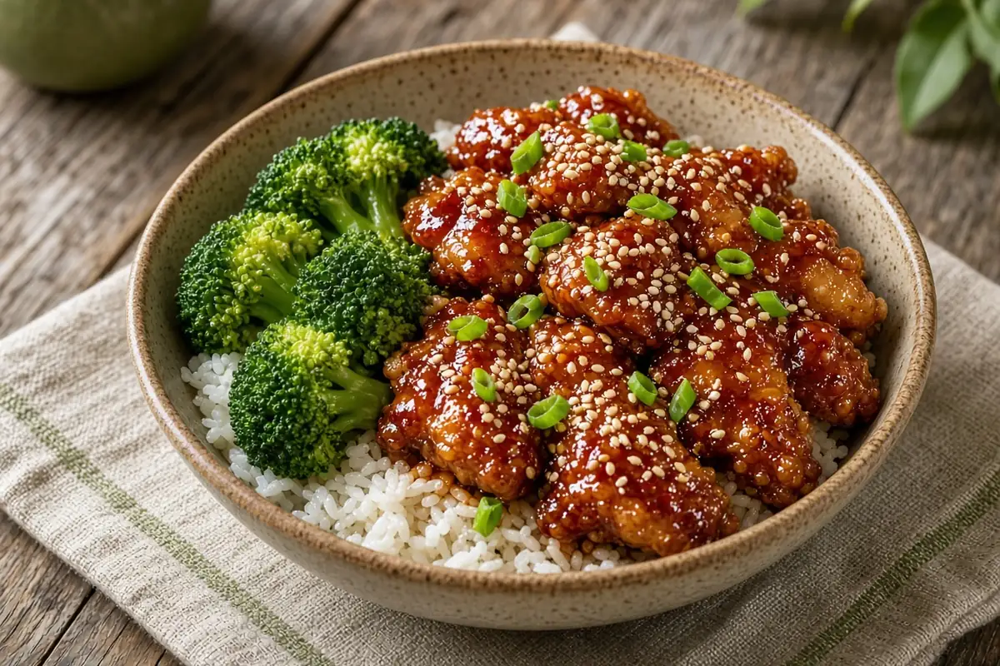

Easy General Tso's Chicken
Cornstarch-dusted chicken thigh pieces pan-fried until golden, then tossed in a sticky hoisin, brown sugar, and garlic sauce. Takeout flavor in about 35 minutes.

Adapted from southernbite.com
4 servings
By
Yield: 4 servings
Prep:
Cook:
Total:
Difficulty: Easy
Ingredients
- 2 lb boneless skinless chicken thighs, cut into 1-inch pieces
- 1/2 cup cornstarch
- 1/4 cup vegetable oil, plus more as needed
- 1/2 cup hoisin sauce
- 2 Tbsp soy sauce, plus more to taste
- 1/4 cup packed brown sugar
- 2 heaping tsp minced garlic (3 to 4 cloves)
- 3 Tbsp rice vinegar
- 1 tsp sesame oil
- 1/2 tsp ground ginger
- 1/2 tsp crushed red pepper, optional
- Sliced green onions and sesame seeds, for garnish
Instructions
- Put the cornstarch in a gallon zip-top bag, add the chicken, seal, and shake until every piece is coated.
- In a medium bowl, stir together the hoisin sauce, soy sauce, brown sugar, garlic, rice vinegar, sesame oil, ground ginger, and crushed red pepper. Set the sauce aside.
- Heat the vegetable oil in a large skillet over medium-high heat. Shake the extra cornstarch off the chicken and fry it in batches without crowding, turning until browned on all sides and cooked through, about 8 minutes per batch. Add more oil between batches if the pan looks dry, and move the cooked chicken to a plate.
- Pour the sauce into the empty skillet, bring it to a boil, then lower to a simmer and cook 5 minutes, until thick and glossy.
- Return the chicken to the skillet and toss to coat. Taste for soy sauce and heat, then top with green onions and sesame seeds and serve right away.
Notes: Thighs stay juicy and forgiving here; breast works but dries out faster. Serve over rice. Add extra crushed red pepper to the sauce if you like it hot.